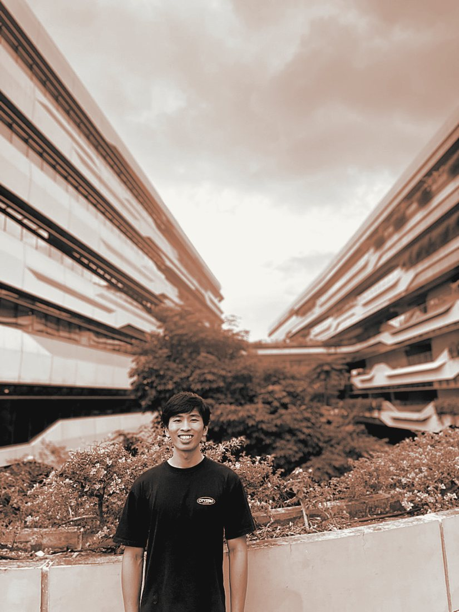
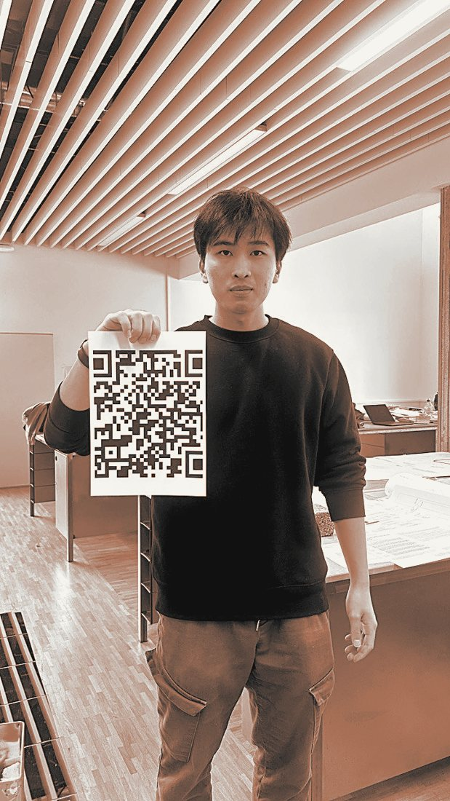
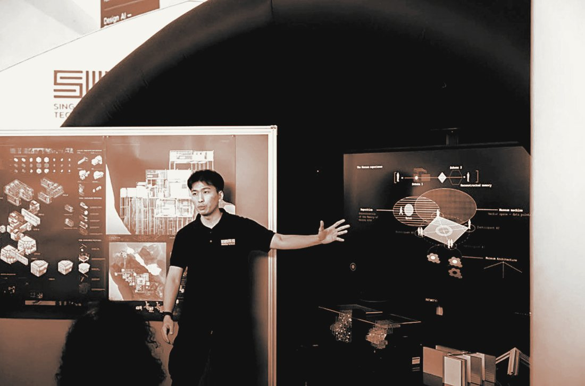
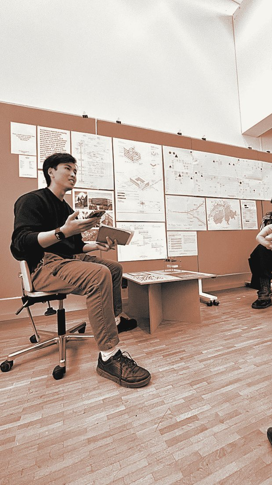
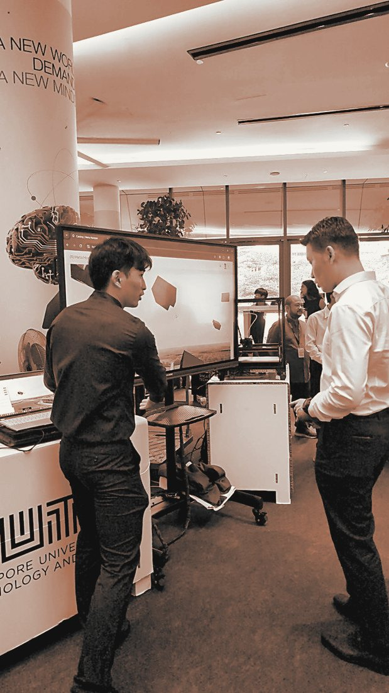
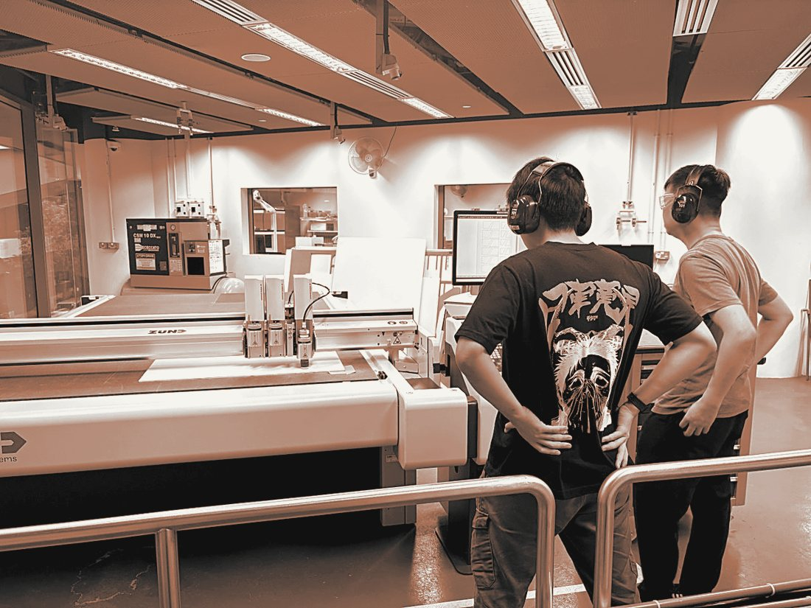
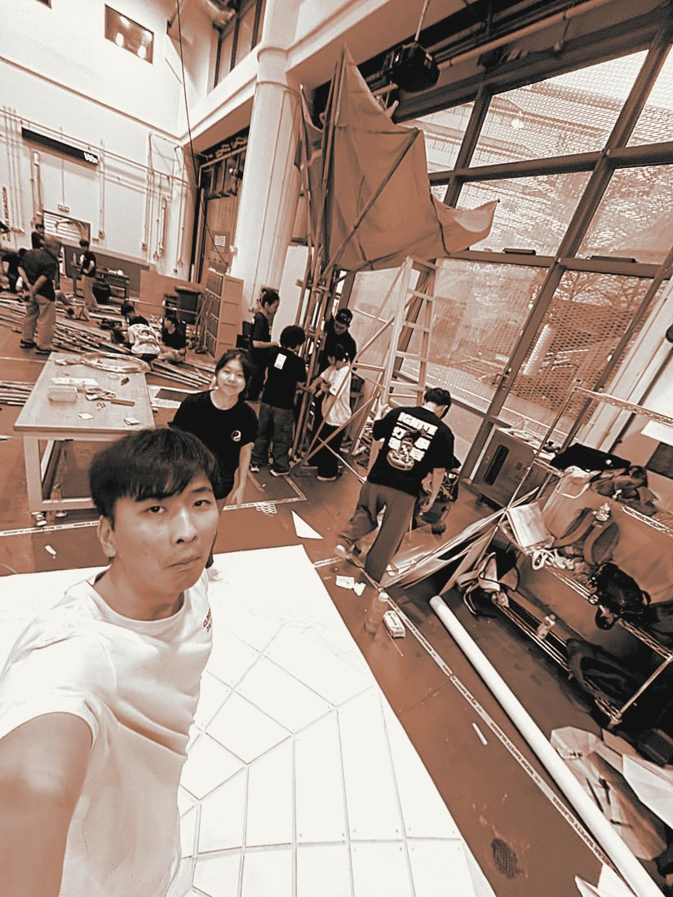

FILM · 0:42
C.L.J — PORTFOLIO / ARCHIVE V.2026.11
Architecture student at SUTD, building tools where AI, computation and architecture have to answer to each other.

newest film from each · plays muted
four ways in · or read the index below
2024 — 2026 · twelve entries
| No. | Title | Category | About | Year |
|---|
workshops · crits · exhibitions






2024 — now
Designing the interior working space of Building 0 and exploring how AI can empower architecture students and practices — VR platforms, projection mapping, map-based planning tools.
Student research assistant on urban heat — household surveys, systematic reviews and research illustration.
Bachelor of Architecture. 3rd place, What The Hack 2024. Posting art and architecture as @ljungart.
open to collaboration